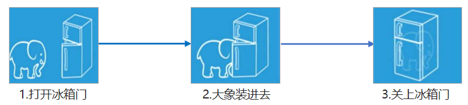
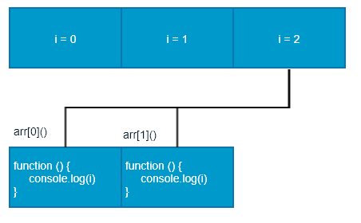
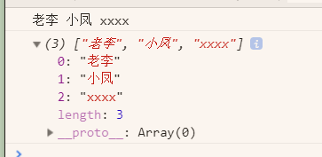
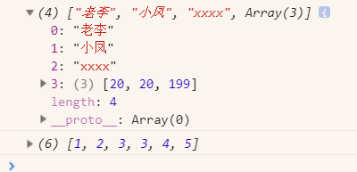
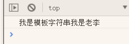

0%
25-JavaScript
25.1-JavaScript
25.2-JavaScript
17. Web APIs 简介
- 目标
- 能够说出Web APIs 阶段与 JavaScript 语法阶段的关联性
- 什么是API
- 什么是Web API
17.1 JS的组成
https://www.bilibili.com/video/BV1Sy4y1C7ha?p=192&spm_id_from=pageDriver

17.2 基础阶段以及Web APIs阶段
1.JS基础阶段
- 我们学习ECMAScript标准规定的基本语法
- 要求同学们掌握JS基础语法
- 不过基本语法，做不了常用的网页交互效果
- 为JS后面打基础
2.Web APIs 阶段
- Web APIs 是 W3C 组织的标准
- Web APIs 我们账户要学习DOM和BOM
- Web APIs 是我们JS所独有的部分
- 我们主要学习页面交互功能
- 需要JS基础的课程内容做基础
3.JS基础学系ECMAScript基础语法，WEB APIs 是 JS 的应用。大量使用JS基础语法做交互效果；
3. API 和 Web API
1.API ( Application Programming Interface,应用程序编程接口)是一些预先定义的函数,目的是提供应用程序与开发人员基于某软件或硬件得以访问一组例程的能力,而无需访问源码,或理解内部工作机制的细节。
1.1 简单理解: ==API是给程序员提供的一种工具,以便能更轻松的实现想要完成的功能。==
1.2 手机充电的接口，就是一个API；2021-3-12 17:26:39
2.Web API
Web API是浏览器提供的一套操作浏览器功能和页面元素的API (BOM和DOM)。
现阶段我们主要针对于浏览器讲解常用的API,主要针对浏览器做交互效果。
比如我们想要浏览器弹出一个警示框,直接使用alert( “弹出 )
MDN详细 APl: https://developer.mozilla.org/zh-CN/docs/Web/API
因为Web APl很多,所以我们将这个阶段称为Web APls
3.总结
1.API是为我们程序员提供的一个接口,帮助我们实现某种功能,我们会使用就可以了,不必纠结内部如何实现
2.Web API主要是针对于浏览器提供的接口,主要针对于浏览器做交互效果。
3.Web APl一般都有输入和输出(函数的传参和返回值) , Web APl很多都是方法(函数)
4.学习Web API可以结合前面学习内置对象方法的思路学习
18. DOM
1. 导读
能够说出什么是 DOM
能够获取页面元素
能够给元素注册事件
能够操作 DOM 元素的属性
能够创建元素
能够操作 DOM 节点
2. DOM简介
2.1 什么是DOM
1.文档对象模型（Document Object Model，简称 DOM），是 W3C 组织推荐的处理可扩展标记语言（HTML或者XML）的标准编程接口。
W3C 已经定义了一系列的 DOM 接口，通过这些 DOM 接口可以改变网页的内容、结构和样式。
2.2 DOM 树

文档：一个页面就是一个文档，DOM 中使用 document 表示
元素：页面中的所有标签都是元素，DOM 中使用 element 表示
节点：网页中的所有内容都是节点（标签、属性、文本、注释等），DOM 中使用 node 表示
DOM 把以上内容都看做是对象，所以就可以使用这些标签的，属性和方法；2021-3-14 14:58:30
3. 获取元素
https://www.bilibili.com/video/BV1Sy4y1C7ha?p=196&spm_id_from=pageDriver
3.1 如何获取页面元素
1.DOM在我们实际开发中主要用来操作元素。我们如何来获取页面中的元素呢?
2.获取页面中的元素可以使用以下几种方式:
- 根据 ID 获取
- 根据标签名获取
- 通过 HTML5 新增的方法获取
- 特殊元素获取
3.2 根据 ID 获取
1.使用 getElementById() 方法可以获取带有 ID 的元素对象。
document.getElementById('id');
1.1 可以在MDN里，看更多的信息；
https://developer.mozilla.org/zh-CN/docs/Web/API/Document/getElementById
id是大小写敏感的字符串，代表了所要查找的元素的唯一ID.所以里面你是字符串；
例如：
var timer = document.getElementById('time');
2.使用 console.dir() 可以打印我们获取的元素对象，更好的查看对象里面的属性和方法。
1 | <body> |
2.1 看了console.dir(timer)后，感觉div是一个对象似的；
3.3 根据标签名获取
1.使用 getElementsByTagName() 方法可以返回带有指定标签名的对象的集合。
document.getElementsByTagName('标签名');
- 注意，别写成 getElementsByName();
2.注意：
因为得到的是一个对象的集合，所以我们想要操作里面的元素就需要遍历。
得到元素对象是动态的
1 | <body> |
2.1 预览

3.这样，会把==整个==标签都取过来，能不能更==指定==一点？
1 | <ul> |
4.当然，还是直接ID，更加方便；
3.4 通过HTML5 新增的方法获取
1.document.getElementsByClassName(‘类名’)；// 根据类名返回元素对象集合
- 1.1 类名不需要+点；.xxx 错误，xxx 正确；
2.document.query[^1]Selector(‘选择器’); // 根据指定选择器返回第一个元素对象
- 2.1 选择器，需要加前面的点or#，类名不用；
3.document.querySelectorAll(‘选择器’); // 根据指定选择器返回
4.注意：
querySelector 和 querySelectorAll里面的选择器需要加符号,比如:document.querySelector(‘#nav’);
3.5 获取特殊元素（body，html）
1.获取body元素
doucumnet.body // 返回body元素对象
2.获取html元素
document.documentElement // 返回html元素对象
- 2.1
document.html是undefined;
X. 自我提问
1.什么选择器需要加符号，例如：document.XXXXX(‘#nav’);
- 1.1 因为是选择器？233；2021-5-18 09:13:12
4. 事件基础
4.1 事件概述
https://www.bilibili.com/video/BV1Sy4y1C7ha?p=200&spm_id_from=pageDriver
1.JavaScript 使我们有能力创建动态页面，而事件是可以被 JavaScript 侦测到的行为。
简单理解： 触发— 响应机制。
网页中的每个元素都可以产生某些可以触发 JavaScript 的事件，例如，我们可以在用户点击某按钮时产生一事件，然后去执行某些操作。
4.2 事件三要素
1.事件源 （谁）
2.事件类型 （什么事件）
3.事件处理程序 （做啥）
4.3 案例
1.页面中有一个按钮，当鼠标点击按钮的时候，弹出“你好”警示框。
2.分析：
- 获取事件源（按钮）
- 注册事件（绑定事件），使用 onclick
- 编写事件处理程序，写一个函数弹出 alert 警示框
3.代码
1 | var btn = document.getElementById('btn'); |
更多：
1 | <body> |
4.4 执行事件的步骤
https://www.bilibili.com/video/BV1Sy4y1C7ha?p=201&spm_id_from=pageDriver
- 获取事件源
- 注册事件（绑定事件）
3.添加事件处理程序（采取函数赋值形式）
4.5 常见的鼠标事件

4.6 分析事件三要素
下拉菜单三要素
关闭广告三要素
5. 操作元素
1.JavaScript 的 DOM 操作可以改变网页内容、结构和样式，我们可以利用 DOM 操作元素来改变元素里面的内容 、属性等。注意以下都是属性
5.1 改变元素内容
1.element.inner[^2]Text
从起始位置到终止位置的内容, 但它去除 html 标签， 同时空格和换行也会去掉
1.1 例如：
1 | <body> |
1.2 这些都是进入页面后，点击才有。有没有直接进入页面就有的？
1 | <body> |
2.element.inner[^2]HTML
起始位置到终止位置的全部内容，包括 html 标签，同时保留空格和换行
- 它会识别html标签；
3.区别
1 | <body> |
2. 可读取
1.这两个属性是可读写的，可以获取元素里面的内容；
1 | <body> |
2.同时，去除 html 标签，空格和换行也会去掉
3.如果是inner[^2]HTML;

3.1 保留空格和换行
3. 使用inner[^2]HTML就可以的了
5.2 常用元素的属性操作
1.innerText、innerHTML 改变元素内容
2.src、href
3.id、alt、title
4.改src，title的例子；
1 | <body> |
5.元素里有很多属性，我们都可以修改。格式：元素.属性；
6.案例：分时显示不同图片,显示不同问候语
1.要求：
根据不同时间，页面显示不同图片，同时显示不同的问候语。
如果上午时间打开页面，显示上午好，显示上午的图片。
如果下午时间打开页面，显示下午好，显示下午的图片。
如果晚上时间打开页面，显示晚上好，显示晚上的图片。
2.案例分析：
➀根据系统不同时间来判断，所以需要用到日期内置对象
❷利用多分支语句来设置不同的图片
③需要一个图片，并且根据时间修改图片，就需要用到操作元素src属性
④需要一个div元素，显示不同问候语，修改元素内容即可
5.3 表单元素的属性操作
https://www.bilibili.com/video/BV1Sy4y1C7ha?p=206&spm_id_from=pageDriver
2. 案例
1.仿京东显示密码
2.点击按钮将密码框切换为文本框，并可以查看密码明文。
3.核心思路：
- 1.点击眼睛按钮，把密码框类型改为文本框就可以看见里面的密码
2.一个按钮两个状态，点击一次，切换为文本框，继续点击一次切换为密码框
3.算法：利用一个flag变量，来判断flag的值，如果是1 就切换为文本框，flag 设置为0，如果是0 就切换为密码框，flag设置为1
5.4 样式属性操作
1.我们可以通过 JS 修改元素的大小、颜色、位置等样式。
1.element.style 行内样式操作
如果就是内联的元素修改，就不用.style;
例如：
this.value = '';2.element.className 类名样式操作
2.注意：
- JS 里面的样式采取驼峰命名法 比如 fontSize、 backgroundColor
- JS 修改 style 样式操作，产生的是行内样式，CSS 权重比较高
1 | <body> |
3.案例：淘宝点击关闭二维码
3.1 当鼠标点击二维码关闭按钮的时候，则关闭整个二维码。
4.案例分析
- 核心思路： 利用样式的显示和隐藏完成， display:none 隐藏元素 display:block 显示元素
- 点击按钮，就让这个二维码盒子隐藏起来即可
5.实现代码：
1 | var btn = document.querySelector('.close-btn'); |
5.1 个人自写完整版：
1 |
|
5.5 案例
1.循环精灵图背景
https://www.bilibili.com/video/BV1Sy4y1C7ha?p=211&spm_id_from=pageDriver
1.可以利用 for 循环设置一组元素的精灵图背景
1.1 分析
首先精灵图图片排列有规律的
核心思路： 利用for循环 修改精灵图片的 背景位置 background-position
让循环里面的 i 索引号 * 44 就是每个图片的y坐标
2.position;定位；往下是正数，往上是负数；==注意==
- 这里不是相对背景图，往下（正数）
- 这里是把背景图；拉到上面去（负数）
2.1 重温，视角是背景图，如果正数，背景图往下拉。如果是负数，背景图往上拉；2021-4-6 20:11:30
3.代码：
1 | <!DOCTYPE html> |
4.精灵图：https://img.alicdn.com/tfs/TB1eiXTXlTH8KJjy0FiXXcRsXXa-24-595.png
- 可能看的时候，背景是黑色的。但其实没有背景；
5.问：将<li>设置成内联块状元素为什么前面的小黑点不见了
答：有小黑点是因为 他的display属性是 list-item; 而li默认的display就是 list-item 所以就有小黑点，你把li的display改成了 inline-block 小黑点自然就没有了，你可以试试把一个span的display改成list-item 你会发现这个span也有小黑点了。
list-item 此元素会作为列表显示。
2. 案例：显示隐藏文本框内容
1.当鼠标点击文本框时，里面的默认文字隐藏，当鼠标离开文本框时，里面的文字显示。
2.分析：
首先表单需要2个新事件，获得焦点 onfocus 失去焦点 onblur
如果获得焦点， 判断表单里面内容是否为默认文字，如果是默认文字，就清空表单内容
如果失去焦点， 判断表单内容是否为空，如果为空，则表单内容改为默认文字
3.使用内联元素placeholder更方便；
<input type="text" placeholder="手机">
4.但这里主要是学习；
代码：
1 |
|
5.6 element.className 类名样式操作
https://www.bilibili.com/video/BV1Sy4y1C7ha?p=213&spm_id_from=pageDriver
- 如果样式修改较多，可以采取操作类名方式更改元素样式。
- class因为是个保留字，因此使用className来操作元素类名属性
- className 会直接更改元素的类名，会覆盖原先的类名。
4.代码：
1 |
|
https://www.bilibili.com/video/BV1Sy4y1C7ha?p=214
X. 轮播图
1.轮播图也称为焦点图，是网页中比较常见的网页特效。
2.功能需求：
- 鼠标经过轮播图模块，左右按钮显示，离开隐藏左右按钮。
- 点击右侧按钮一次，图片往左播放一张，以此类推， 左侧按钮同理。
- 图片播放的同时，下面小圆圈模块跟随一起变化。
- 点击小圆圈，可以播放相应图片。
- 鼠标不经过轮播图， 轮播图也会自动播放图片。
- 鼠标经过，轮播图模块， 自动播放停止。
3.动态生成小圆圈
- 核心思路：小圆圈的个数要跟图片张数一致
- 所以首先先得到ul里面图片的张数（图片放入li里面，所以就是li的个数）
- 利用循环动态生成小圆圈（这个小圆圈要放入ol里面）
- 创建节点 createElement(‘li’)
- 插入节点 ol. appendChild(li)
- 第一个小圆圈需要添加 current 类
4.
X2. 看到哪
1.2021-4-6 20:14:20
- 18.5.5.1，重新再写一遍；2021-4-6 20:14:31
X3. 题注
25.3-JS笔记
1. call()
1.JavaScript call[^1]() 方法
call() 方法是预定义的 JavaScript 方法。
它可以用来调用所有者对象作为参数的方法。
通过 call()，您能够使用属于另一个对象的方法。
本例调用 person 的 fullName 方法，并用于 person1：
1 | var person = { |
2.call() 方法可接受参数：
1 | var person = { |
2. 函数内部的this指向
1.~https://www.e-learn.cn/topic/3358584
2021-4-8 11:00:28
2.所谓的指向，称呼为代替更合适；
- this指向谁，就等于了谁，代替了谁。
- 而这些指向一般都是函数名，对象名。不会指向某一个简单的值；
- 2021-4-8 11:05:49
3. this
1.~https://developer.mozilla.org/zh-CN/docs/Web/JavaScript/Reference/Operators/this
2.与其他语言相比，函数的 this 关键字在 JavaScript 中的表现略有不同，此外，在严格模式和非严格模式之间也会有一些差别。
在绝大多数情况下，函数的调用方式决定了 this 的值（运行时绑定）。this 不能在执行期间被赋值，并且在每次函数被调用时 this 的值也可能会不同。ES5 引入了 bind 方法来设置函数的 this 值，而不用考虑函数如何被调用的。ES2015 引入了箭头函数，箭头函数不提供自身的 this 绑定（this 的值将保持为闭合词法上下文的值）
3.当前执行上下文（global、function 或 eval）的一个属性，在非严格模式下，总是指向一个对象，在严格模式下可以是任意值。
- 总是指向一个对象，不是指向那种创建的对象，而是总有指向的地方；
- 2021-4-8 11:35:33
3.1 在全局上下文中
1.无论是否在严格模式下，在全局执行环境中（在任何函数体外部）this 都指向全局对象。
3.2 函数上下文
1.在函数内部，this的值取决于函数被调用的方式。
因为下面的代码不在严格模式下，且 this 的值不是由该调用设置的，所以 this 的值默认指向全局对象，浏览器中就是 window。
1 | function f1(){ |
2.然而，在严格模式下，如果进入执行环境时没有设置 this 的值，this 会保持为 undefined，如下：
1 | function f2(){ |
3.在第二个例子中，this 应是 undefined，因为 f2 是被直接调用的，而不是作为对象的属性或方法调用的（如 window.f2()）。有一些浏览器最初在支持严格模式时没有正确实现这个功能，于是它们错误地返回了window对象。
3.3 函数上下文
3.4 类上下文
3.5 派生类
4. 回调函数
简单一句：函数a的事先干完，回头再调用函数b
a（b），不过上面怎么看起来很复杂，因为直接把函数b本身写进参数了吗？而不是b这个代名词；
2.
1 | function e(m, n, Callback) { |
5. 问题
1. 这种写法？
1 | var mySwiper = new Swiper('.swiper-container', { |
1 | gulp.task('htmlmin', () => { |
2.问什么在{}里面，又有xxx: {}的
3.问了组队，是json。B站视频没个啥。百度随便先看看，不写自己的笔记；
6. JSON
6.1 菜鸟教程出品
1. 简介
1.SON: JavaScript Object Notation[^2](JavaScript 对象表示法)
JSON 是存储和交换文本信息的语法，类似 XML。
JSON 比 XML 更小、更快，更易解析。
2.例如：
1 | { |
当然这里是看不懂地；
这个 sites 对象是包含 3 个站点记录（对象）的数组。
1.2 什么是 JSON ？
- JSON 指的是 JavaScript 对象表示法（JavaScript Object Notation）
- JSON 是轻量级的文本数据交换格式
- JSON 独立于语言：JSON 使用 Javascript语法来描述数据对象，但是 JSON 仍然独立于语言和平台。JSON 解析器和 JSON 库支持许多不同的编程语言。 目前非常多的动态（PHP，JSP，.NET）编程语言都支持JSON。
- JSON 具有自我描述性，更易理解
1.3 转换为 JavaScript 对象
JSON 文本格式在语法上与创建 JavaScript 对象的代码相同。
由于这种相似性，无需解析器，JavaScript 程序能够使用内建的 eval() 函数，用 JSON 数据来生成原生的 JavaScript 对象。
2. 语法
1.JSON 语法是 JavaScript 语法的子集。
- 数据在名称/值对中
- 数据由逗号分隔
- 大括号 {} 保存对象
- 中括号 [] 保存数组，数组可以包含多个对象
2. JSON 数据的书写格式是：
1 | key : value |
2.1 名称/值对包括字段名称（在双引号中），后面写一个冒号，然后是值：
"name" : "菜鸟教程"
这很容易理解，等价于这条 JavaScript 语句：
name = "菜鸟教程"
2.2 同时，与js创建对象非常相似：
1 | var star = { |
- 1.只是左边的name，没有双引号；
3. JSON 值
1.JSON 值可以是：
- 数字（整数或浮点数）
{ "age":30 }
- 字符串（在双引号中）
- 逻辑值（true 或 false）
- 数组（在中括号中）
- 对象（在大括号中）
- null
4. JSON 对象
1.JSON 对象在大括号 {} 中书写：
{key1 : value1, key2 : value2, ... keyN : valueN }
- 1.1 对象可以包含多个名称/值对：
{ "name":"菜鸟教程" , "url":"www.runoob.com" }
- 1.2 这一点也容易理解，与这条 JavaScript 语句等价：
name = "菜鸟教程" url = "www.runoob.com"
5. JSON数组
1.JSON 数组在中括号 [] 中书写：
- 1.数组可包含多个对象：
1 | [ |
1 | { |
在上面的例子中，对象 sites[^3] 是包含三个对象的数组。每个对象代表一条关于某个网站（name、url）的记录。
6.2 狂神说-1小时掌握json
7. gulp-4.0
1.因为在15-node.js中，是4.0版本一下的
2.这里要写4.0版本以上的
X.题注
[^1]:call英 [kɔːl] 美 [kɔːl] v.给…命名;称呼;把…叫做;认为…是;把…看作;把自己称为;自诩
n.打电话;通话;(禽、兽的)叫声;(唤起注意的)喊声;短暂拜访
[^2]:notation 英 [nəʊˈteɪʃn] 美 [noʊˈteɪʃn] n.(数学、科学和音乐中的)符号，记号，谱号
[^3]:site英 [saɪt] 美 [saɪt] n.(建筑物、城镇等的)地点，位置，建筑工地;现场;发生地;场所;网站;站点
v.使坐落在;为…选址
sites英 [saɪts] 美 [saɪts] n.(建筑物、城镇等的)地点，位置，建筑工地;现场;发生地;场所;网站;站点
v.使坐落在;为…选址 site的第三人称单数和复数
25.4-js进阶-面向对象ES6
1. JavaScript 面向对象
目标：
能够说出什么是面向对象
能够说出类和对象的关系
能够使用 class 创建自定义类型
能够说出什么是继承
面向对象编程介绍
ES6 中的类和对象
类的继承
面向对象案例
1.1 面向对象编程介绍
1. 两大编程思想
- 面向过程
- 面向对象
2. 面向过程编程
面向过程编程 POP (Process-oriented programming)
1.面向过程就是分析出解决问题所需要的步骤，然后用函数把这些步骤一步一步实现，使用的时候再一个一个的依次调用就可以了。
2.举个栗子：将大象装进冰箱，面向过程做法。

3.面向过程，就是按照我们分析好了的步骤，按照步骤解决问题。
3. 面向对象编程 OOP
面向对象编程 OOP (Object Oriented Programming)
1.面向对象是把事务分解成为一个个对象，然后由对象之间分工与合作。
2.举个栗子：将大象装进冰箱，面向对象做法。先找出对象，并写出这些对象的功能：
1.大象对象
进去
2.冰箱对象
打开
关闭3.使用大象和冰箱的功能
面向对象是以对象功能来划分问题，而不是步骤。
3.在面向对象程序开发思想中，每一个对象都是功能中心，具有明确分工。
面向对象编程具有灵活、代码可复用、容易维护和开发的优点，更适合多人合作的大型软件项目。
4.面向对象的特性：
封装性
继承性
多态性

4. 面向过程和面向对象的对比
1.面向过程：
优点：性能比面向对象高，适合跟硬件联系很紧密的东西，例如单片机就采用的面向过程编程。
缺点：没有面向对象易维护、易复用、易扩展。
2.面向对象：
优点：易维护、易复用、易扩展，由于面向对象有封装、继承、多态性的特性，可以设计出低耦合[^1][^2]的系统，使系统 更加灵活、更加易于维护
缺点：性能比面向过程低
3.用面向过程的方法写出来的程序是一份蛋炒饭，而用面向对象写出来的程序是一份盖浇饭。
https://www.bilibili.com/video/BV1Kt411w7MP?p=3&spm_id_from=pageDriver
1.2 ES6 中的类和对象
1. 面向对象
1.面向对象更贴近我们的实际生活, 可以使用面向对象描述现实世界事物. 但是事物分为具体的事物和抽象的事物
抽象的(泛指的)，具体的(特指的)
2.面向对象的思维特点:
- 抽取（抽象）对象共用的属性和行为组织(封装)成一个类(模板)
- 对类进行实例化, 获取类的对象
3.面向对象编程我们考虑的是有哪些对象，按照面向对象的思维特点,不断的创建对象,使用对象,指挥对象做事情.
2. 对象
1.现实生活中：万物皆对象，对象是一个具体的事物，看得见摸得着的实物。例如，一本书、一辆汽车、一个人可以是“对象”，一个数据库、一张网页、一个与远程服务器的连接也可以是“对象”。
2.在 JavaScript 中，对象是一组无序的相关属性和方法的集合，所有的事物都是对象，例如字符串、数值、数组、函数等。
3.对象是由==属性==和==方法==组成的：
属性：事物的==特征==，在对象中用==属性==来表示（常用名词）
方法：事物的==行为==，在对象中用==方法==来表示（常用动词）
3. 类 class
1.在 ES6 中新增加了类的概念，可以使用 class 关键字声明一个类，之后以这个类来实例化对象。
2.类抽象了对象的公共部分，它泛指某一大类（class），对象特指某一个，通过类实例化一个具体的对象。

3.类抽象了对象的公共部分，它泛指某一大类（class）
- 对象特指某一个，通过类实例化一个具体的对象
4.面向对象的思维特点:
- 抽取（抽象）对象共用的属性和行为组织(封装)成一个类(模板)
- 对类进行实例化, 获取类的对象
5.面向对象的思维特点:
抽取（抽象）对象共用的属性和行为组织(封装)成一个类(模板)
对类进行实例化, 获取类的对象
4. 创建类
1.语法：
1 | class name { |
2.创建实例：
var xx = new name();
2.1 注意： 类必须使用 new 实例化对象
https://www.bilibili.com/video/BV1Kt411w7MP?p=4&spm_id_from=pageDriver
2.2 图示：

3.constructor() 方法是类的构造函数(默认方法)，用于传递参数,返回实例对象，通过 new 命令生成对象实例时，自动调用该方法。如果没有显示定义, 类内部会自动给我们创建一个constructor() 。
3.1 语法：
1 | class Person { |
3.2 创建实例：
1 | var ldh = new Person('刘德华', 18); |
4.注意：
(1) 通过class关键字创建类，类名首写字母大写；
(2) 类里面有个constructor函数,可以接受传递过来的参数,同时返回实例对象。
(3) constructor函数只要new生成实例时,就会自动调用这个函数,如果我们不写这个函数,类也会自动生成这个函数
(4) 生成实例new不能省略
(5) 最后注意语法规范，创建类类名后面不要加小括号，生成实例类名后面加小括号，构造函数不需要加function
5. 类添加方法
1.语法：
1 | class Person { |
2.创建实例：
1 | var ldh = new Person('刘德华', 18); |
注意： 方法之间不能加逗号分隔，同时方法不需要添加 function 关键字。
3.自写：
1 | <script> |
1.3 类的继承
1. 继承
现实中的继承：子承父业，比如我们都继承了父亲的姓。
程序中的继承：子类可以继承父类的一些属性和方法。
1.语法：
1 | class Father{ // 父类 |
2.实例：
1 | class Father { |
2. super 关键字
1==.super 关键字==用于访问和调用对象父类上的函数。==可以调用父类的构造函数==，也可以调用父类的普通函数
2.语法：
1 | class Person { // 父类 |
3.注意: 子类在构造函数中使用super, 必须放到 this 前面 (必须先调用父类的构造方法,在使用子类构造方法)
4.个人案例：
1 | <script> |
https://www.bilibili.com/video/BV1Kt411w7MP?p=7&spm_id_from=pageDriver
A1. ES6
A1.1 简介
1. 什么是 ES6 ?
1.ES 的全称是 ECMAScript , 它是由 ECMA 国际标准化组织,制定的一项脚本语言的标准化规范。
| 年份 | 版本 |
|---|---|
| 2015年6月 | ES2015 |
| 2016年6月 | ES2016 |
| 2017年6月 | ES2017 |
| 2018年6月 | ES2018 |
| … | … |
2.ES6 实际上是一个泛指，泛指 ES2015 及后续的版本。
2. 为什么使用 ES6 ?
1.每一次标准的诞生都意味着语言的完善，功能的加强。JavaScript语言本身也有一些令人不满意的地方。
- 变量提升特性增加了程序运行时的不可预测性
- 语法过于松散，实现相同的功能，不同的人可能会写出不同的代码
A1.2 ES6新增语法
1. let
1.ES6中新增的用于声明变量的关键字。
1.1 块级有效
- let声明的变量只在所处于的块级有效
1 | if (true) { |
2.注意：使用let关键字声明的变量才具有块级作用域，使用var声明的变量不具备块级作用域特性。
1 | if(true){ |
3.一个{}就是一个块级；
4.作用：在逻辑复杂的时候，能防止内层变量覆盖外层变量；
4.1 防止循环变量变成全局变量
1 | <script> |
- 在for的外面，i的值也有；2021-4-7 17:22:14
- 如果改成let，那么外面是undefined，找不到；
1.2 不存在变量提升
1 | console.log(a); // a is not defined |
1.3 暂时性死区
1 | var tmp = 123; |
1.本来，按照平常的规律，外面var num了，里面能找到；
2.但后面let num了，那么在这个{}里面，num就是一个块级作用的变量了，与外面的 var num没关系了。
1.4 经典面试题
1.代码：
1 | var arr = []; |
2.图解？

3.经典面试题图解：此题的关键点在于变量i是全局的，函数执行时输出的都是全局作用域下的i值。
4.添加断点看懂了；
下面
arr[0]();执行的时候，i=2，不变了。这个时候还去console，就只有2了；如果只是arr[0]，估计是0，我去代码试试；
两个结果都是：
1
2
3ƒ () {
console.log(i);
}数组里面的值，或者叫元素，居然可以是一个函数。我的天；2021-4-7 18:00:07
5.如果换成let
经典面试题图解：此题的关键点在于每次循环都会产生一个块级作用域，每个块级作用域中的变量都是不同的，函数执行时输出的是自己上一级（循环产生的块级作用域）作用域下的i值.
arr[0](); arr[1]();的结果就是0和1
https://www.bilibili.com/video/BV1Kt411w7MP?p=96&spm_id_from=pageDriver
2. const
1.作用：声明常量，常量就是值（内存地址）不能变化的量。
- 具有块级作用域
1 | if (true) { |
2.声明常量时必须赋值
const PI; // Missing initializer in const declaration
3.常量赋值后，值不能修改。
1 | const PI = 3.14; |
3.1 不过复杂数据可以更改（虽然也不复杂）比如数组里面的数据
- 直接改数组是报错的；2021-4-7 19:58:36
1 | const ary = [100, 200]; |
3. let、const、var 的区别
1.使用 var 声明的变量，其作用域为该语句所在的函数内，且存在变量提升现象。
2.使用 let 声明的变量，其作用域为该语句所在的代码块内，不存在变量提升。
3.使用 const 声明的是常量，在后面出现的代码中不能再修改该常量的值。
- 复杂数据的值可以变化
| var | let | const |
|---|---|---|
| 函数级作用域 | 块级作用域 | 块级作用域 |
| 变量提升 | 不存在变量提升 | 不存在变量提升 |
| 值可更改 | 值可更改 | 值不可更改 |
4. 解构赋值
1.ES6中允许从数组中提取值，按照对应位置，对变量赋值。对象也可以实现解构。
4.1 数组解构
0.数组解构，允许我们按照一一对应的关系从数组中提起值，然后将值赋值给变量。
1.右边的[1,2,3]是数组，左边的是变量；（快速赋值用？）
- 左边写[]代表数组解构；
- 左边写{}代表对象解构
1 | let [a, b, c] = [1, 2, 3]; |
2.以上是左边变量数，等于，右边数组值的个数。
- 如果不相等呢？
如果解构不成功，变量的值为undefined。
1 | let [foo] = []; |
1 | let [a,b,c,e,d] = [1, 2, 3]; |
https://www.bilibili.com/video/BV1Kt411w7MP?p=102&spm_id_from=pageDriver
4.2 对象解构
1.对象解构允许我们使用变量的名字匹配对象的属性，匹配成功，将对象属性的值赋值给变量。
2.一个对象：let person = { name: 'zhangsan', age: 20 };
2.1 如果在之前，我们取数据是XX.
1 | person.name; |
1 | let person = { name: 'zhangsan', age: 20 }; |
3.对象解构的另一种写法
1 | let {name: myName, age: myAge} = person; // myName myAge 属于别名 |
3.1 自
1 | let person = { name: 'lijie', age: 20, sex: '女' }; |
5. 箭头函数
1.ES6中新增的定义函数的方式。
1 | () => {} |
- ()形参，{}函数体；
2.函数体中只有一句代码，且代码的执行结果就是返回值，可以省略大括号。
1 | function sum(num1, num2) { |
3.如果形参只有一个，可以省略小括号
1 | function fn (v) { |
4.箭头函数不绑定this关键字，箭头函数中的this，指向的是函数定义位置的上下文this。
- 比如下面，这个箭头函数是在fn函数里面，那么箭头函数里面的this就是fn函数里面this指向的地方；
- 而不是箭头函数自己，所谓的this的指向；
1 | const obj = { name: '张三'} |
返回的结果：是一个对象；
1 | Object |
4.1 call方法，可以改变函数内部的this指向；
4.2 上面那个，果然就叫：匿名箭头函数；
5.2 练习题
1.以下代码输出什么？
1 | var obj = { |
1.1 输出undfined。
- 为什么不是20？
- 不是说this指向是，包含它的那个谁的this指向吗？
- 这里是对象obj包含了它
- 那就是obj的this指向，这里的obj没什么特殊情况，就应该是obj的呀？
1.2 视频说：
- 对象没有作用域，所以没有this指向。
- ？？？
- 所以，这里的，箭头函数的this，是window；因为这里的箭头函数被定义到了全局作用域下
- 而window.say()，是没有的；2021-4-8 11:19:32
- 我觉得我有必要，写一个this关键字的 小结笔记；
- 2021-4-8 11:27:47
1.3 如果不是箭头函数，那么this能指向对象名；
1 | const test = { |
6. 剩余参数
1.剩余参数语法允许我们将一个不定数量的参数表示为一个数组。
1 | function sum (first, ...args) { |
1.1 在args前面加了三个点，表示剩余的参数我都接收了；
2.配合着箭头函数使用：
1 | const sum = (...args) => { |
2.1 emm，大略的说说：
forEach()是遍历函数的方法，数组为对象
item就是个形参，因为forEach()能得到数组里面的每一个值，所以这里就是每一个值。
然后是箭头函数
1
2
3
4
5
6
7
8
9item => total += item;
// 等于
(item) => {
total += item;
}
//等于
function (item) {
total += item;
}
3. 和解构配合使用
1 | let students = ['wangwu', 'zhangsan', 'lisi']; |
https://www.bilibili.com/video/BV1Kt411w7MP?p=108&spm_id_from=pageDriver
1 | let name = ['老李', "小凤", 'xxxx']; |
A1.3 ES6 的内置对象扩展
1. Array 的扩展方法
1.1 扩展运算符（展开语法）
1.扩展运算符可以将数组或者对象转为用逗号分隔的参数序列。
1 | let ary = [1, 2, 3]; |
1.1 自
1 | let name = ['老李', "小凤", 'xxxx']; |
1.2 预览：

2.扩展运算符可以应用于合并数组。
1 | // 方法一 |
2.1 自写：
1 | let name = ['老李', "小凤", 'xxxx']; |
2.2 预览：

3.将类数组或可遍历对象转换为真正的数组
1 | let oDivs = document.getElementsByTagName('div'); |
3.3 …oDivs，先把一个伪数组集合里的每一个值，分成由逗号分隔的；例如：
(div,div,div)
- 然后[]起来，变成一个数组格式，由变量保存；
1.2 构造函数方法：Array.from()
https://www.bilibili.com/video/BV1Kt411w7MP?p=112&spm_id_from=pageDriver
2021-4-8 15:31:49
1.将类数组或可遍历对象转换为真正的数组
1 | let arrayLike = { |
2.方法还可以接受第二个参数，作用类似于数组的map方法，用来对每个元素进行处理，将处理后的值放入返回的数组。
1 | let arrayLike = { |
1.3 实例方法：find()
A1.4 String 的扩展方法
1. 模板字符串
1.ES6新增的创建字符串的方式，使用反引号定义。
1 | let name = `zhangsan`; |
2.模板字符串中可以解析变量。
1 | let name = '张三'; |
- 以前啊，要用 + 号，多个 引号；
3.模板字符串中可以换行。
- 1.模板字符串里面的东西都会记录，不过是标签还是换行
1 | let result = { |
3.1 你以为span就是span？视频里说这是换行用的。。。。
3.2 然而并不是这样；

- 换行只是因为ENTER吧；
4.在模板字符串中可以调用函数。
1 | const sayHello = function () { |
https://www.bilibili.com/video/BV1Kt411w7MP?p=116&spm_id_from=pageDriver

2. 实例方法：startsWith() 和 endsWith()
startsWith()：表示参数字符串是否在原字符串的头部，返回布尔值
endsWith()：表示参数字符串是否在原字符串的尾部，返回布尔值
1 | let str = 'Hello world!'; |
X. 题注
[^2]:耦合性（英语：Coupling，dependency，或称耦合力或耦合度）是一种软件度量，是指一程序中，模块及模块之间信息或参数依赖的程度。
内聚性是一个和耦合性相对的概念，一般而言低耦合性代表高内聚性，反之亦然。耦合性和内聚性都是由提出结构化设计概念的赖瑞·康斯坦丁所提出[1]。低耦合性是结构良好程序的特性，低耦合性程序的可读性及可维护性会比较好。
25.5-JS插件
1. swiper
1.官网：https://www.swiper.com.cn
1.1 使用
1.~https://www.swiper.com.cn/usage/index.html
2.
1.2 分页器
1. clickable
1.此参数设置为true时，点击分页器的指示点分页器会控制Swiper切换。
2. bulletClass
1.可以自定义节点的css；
2.pagination分页器内元素的类名。
3.用法：
1 | <script language="javascript"> |
3. bulletActiveClass
1.定义pagination 分页器内当前活动块的指示小点的类名。
1.3 Navigation Buttons（前进后退按钮）
1. 设置按钮的css
1.可以不用，nextEl把类名直接换了，添加类名覆盖也许。
1.1 这样可以用原本有的一些东西；
1.2 比如：
1 | <!-- 如果需要导航按钮 --> |
1 | .swiper-button-next2 { |
2. 修改颜色
1.添加类名：swiper-button-white
- 这个是swiper自己写了的；